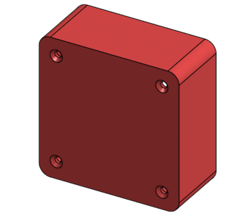
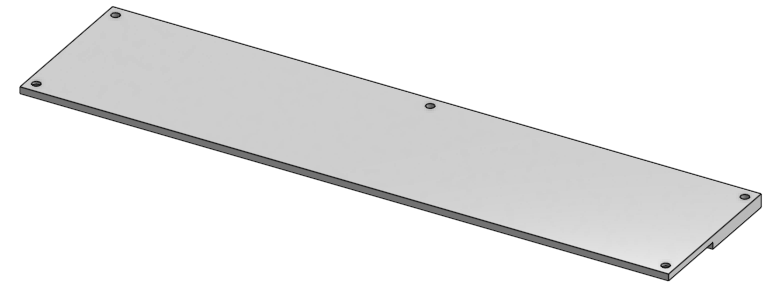
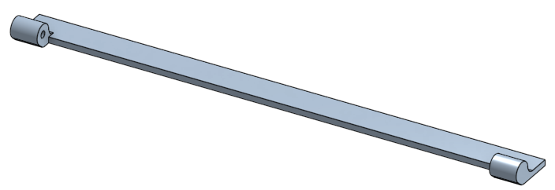
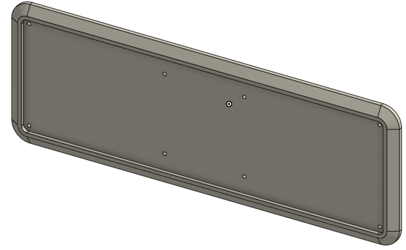
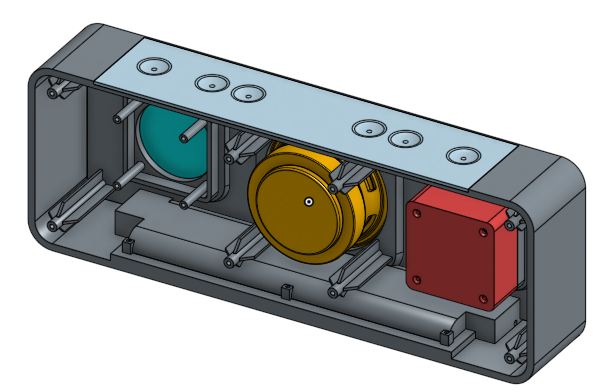
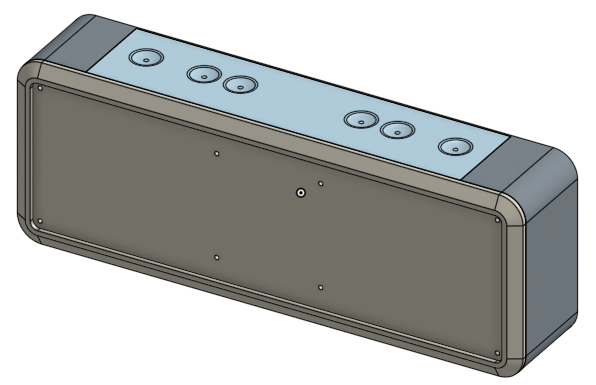
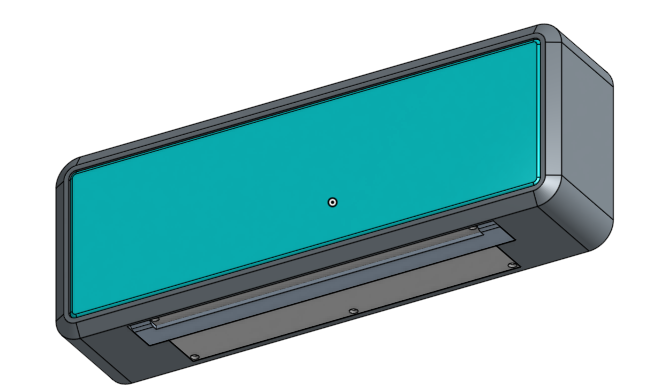

Week 6 Homework << Previous Next >> Week 7 Homework
Week 7 Lesson Plan
課綱：依W6 Lesson Plan所繪製的圖繼續往下繪製出電池以及框架內部、後半部。
名稱：藍芽喇叭feat.電池 （實體連結在這）
| Part零件名稱 |
Part零件外觀圖 |
| 喇叭箱 |
 |
| 電池蓋 |
 |
| 旋轉支架 |
 |
| 背蓋 |
 |
________________________________________________________________________________________________
將步驟由上至下逐個介紹各特徵和草圖的用途
依文字顏色區分零件上的草圖跟特徵
★草圖及特徵的代號將沿用上一張的繼續！
- 草圖14：在外殼框架的後視圖編輯，為外殼框架內部的底基框。
- 擠出11：填料，長出底基框的厚度(Y軸)。
- 鏡射1：因小喇叭有兩個，故鏡射到另外一邊。
- 擠出17：延伸擠出11的面繼續加厚(Y軸)，只需長外框就好，為喇叭箱的外殼。
- 草圖15：將喇叭箱外殼的外邊與內邊投影起來。
- 擠出18：將草圖15填料，為喇叭箱的底部。
- 平面1：新增一個偏移喇叭箱底部的面。
- 草圖16：在平面1上編輯，畫出網狀的草圖，只需要畫一條線就好。
- RIb1：類似肋的功能，給於厚度即可長出網肋。
★需使用新增特徵功能，把此功能叫出，才可使用！
- 草圖17：用點功能選取框架四個圓角的中心，還有大喇叭上的四個孔。
★大喇叭上的四個孔一樣需要隱藏外殼框架才點選的到。
- Screw Boss1：點選草圖17上的八個點，即可叫出框架支撐架。
★不能直接點選草圖，只能一一點選頂點，然後同RIb需先叫出才能使用。
- 草圖18：用點功能選取小喇叭上的四個孔。
- Screw Boss2：點選草圖18上的四個點，即可叫出喇叭箱的支撐架。
- 鏡射2：面鏡射，因喇叭箱左右對稱，點選Screw Boss2產生出的四支。
★因無法使用特徵鏡射，所以面鏡射須點選外圓柱面、內圓柱面、圓柱表面，
所以總共有十二面！
- 草圖16：在小喇叭上的四個孔做投影的草圖。
★投影四個孔時，必須將外殼框架給隱藏，不然無法選取到其中心點！
- 擠出19：除料，完全貫穿。
- 草圖17：為電池蓋的草圖。
- 擠出20：填料，長出電池蓋的長度(X軸)。
- 草圖18：為電池蓋上的五個螺絲孔+三個螺絲孔座的草圖。
★因此步驟是使用限制條件來固定草圖，所以需使用中心線的中點還有對稱功能來固定草圖，然後此長方形的中心與此圖的中心不是重疊的（須注意）！
- 擠出21：雙向填料，第一方向為給定深度(Z軸)，第二方向為成形至框架薄殼的內表面，這樣重疊的部分即為電池蓋的厚度，所以會從電池蓋的下方開始長。
- 擠出22：除料，為電池蓋上的五個螺絲孔(Z軸)。
- 倒角3：將螺絲孔表面倒角，故此螺絲為沉頭類型。
- 草圖19、20：為旋轉支架的草圖。
★其旋轉中心為上周做的草圖8、9。
- 擠出23、25：填料，長出旋轉軸的長度(X/-X軸)。
- 擠出24：填料，長出支架的長度(X軸)。
★因兩個部分長度不一樣，所以需分開填料。
- 圓角3：在旋轉支架的外觀上做美化。
- 草圖21：在外殼框架背面做投影草圖。
- 擠出26：填料，長出背蓋厚度(Y軸)。
- 草圖22：為背蓋的凹槽。
- 擠出27：除料(-Y軸)。
- 草圖23：在背蓋表面上投影框架支撐架的八個內圓孔。
- 擠出28：貫穿除料，為整體框架的圓孔，需前後查看有無偏移。
- 倒角2：在背蓋上做美化。
★此特徵為上周的倒角1，因特徵皆是兩方向的倒角，故在左方特徵欄將倒角1往下拖移，並在倒角圖元中選取背蓋的邊，即可完成，此概念只是調整時間軸來進行二次編輯，這樣即可達到減化特徵項目的效果。
- 圓角4：將外殼框架前面放置聲音屏障的凹槽四個角皆倒上圓角。
- 薄殼2：在聲音屏障與凹槽中進行薄殼。
_________________________________________________________________________________
完成品前後視圖+背蓋


Week 6 Homework << Previous Next >> Week 7 Homework